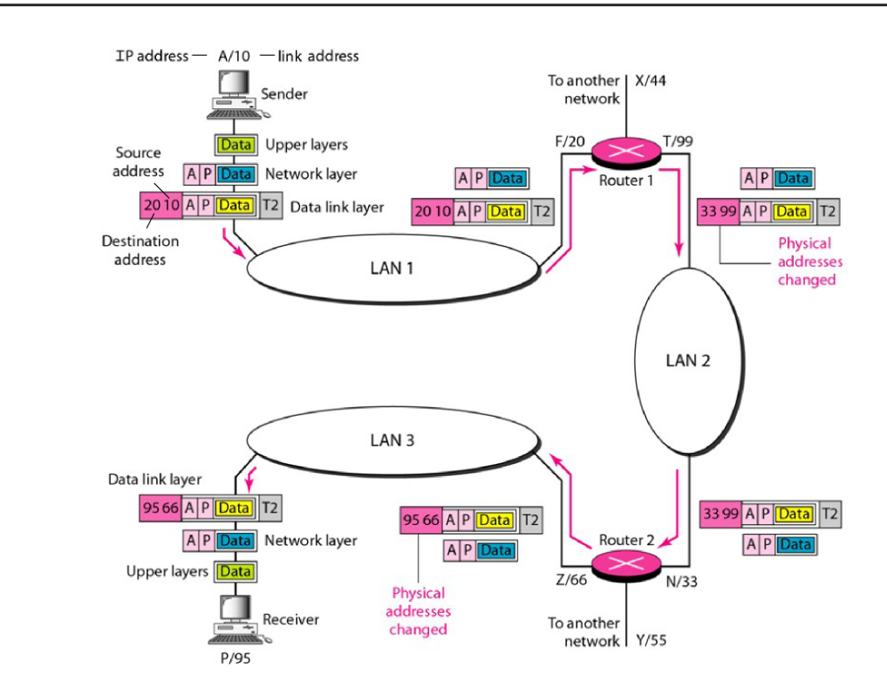
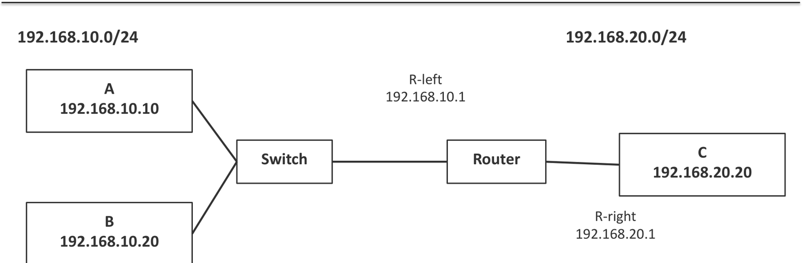
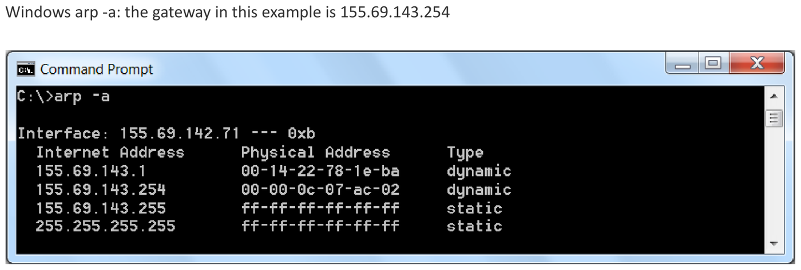
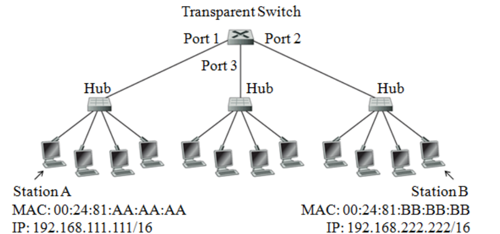
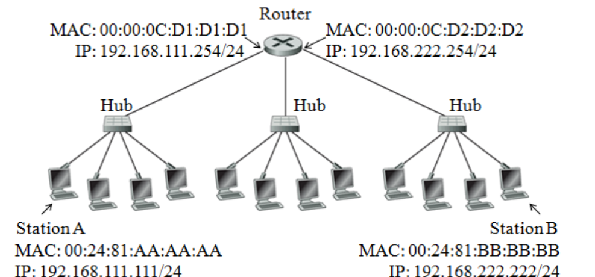
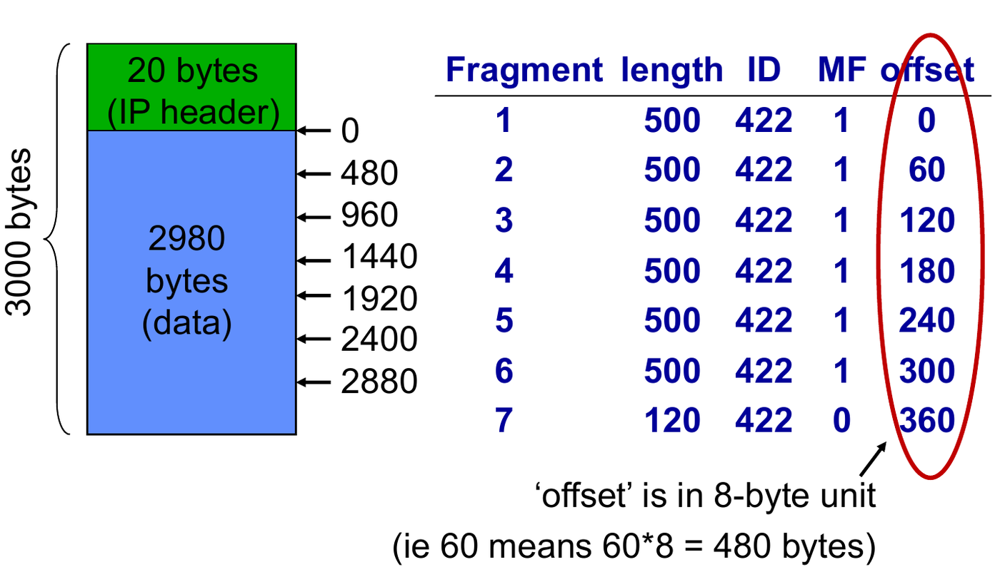
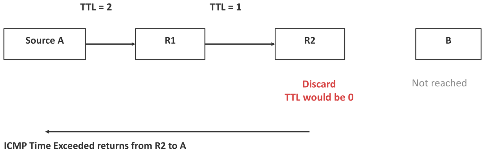
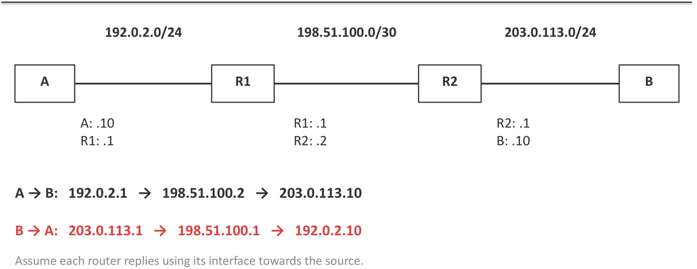
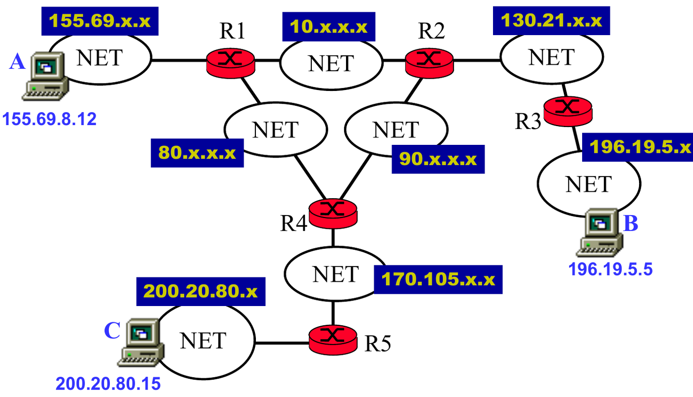

6. Network Layer: Forwarding, ARP, Fragmentation & ICMP
This chapter covers the second half of Part II Lecture 2. It answers four questions:
- When a host or router has a packet, where does it send it next? (Forwarding, longest-prefix match.)
- How does it find the MAC address of that next device? (ARP.)
- What happens when a packet is too big for the next link? (Fragmentation.)
- How do we test the path? (ICMP, ping, traceroute.)
The exam asks you to list the frames seen at a station during a ping, pick a route with longest-prefix match, build a fragmentation table, and rebuild a topology from traceroute outputs.
The questions sit in drawers after the concept they test. Tutorial 2.1 Q4 and Tutorial 2.2 Q1 to Q3 have official solutions. Concept checks and extensions are unofficial. Past-year papers are not in these notes. Tutorial 2.2 Q4 (Dijkstra) is in Chapter 7.
Quick reference
| Topic | Rule |
|---|---|
| Local or remote | AND the destination with your own mask. Same network = local: ARP for the destination. Different = remote: ARP for the gateway. The IP destination never changes. |
| Longest-prefix match | Keep the entries that contain the destination. Take the largest
/n. 0.0.0.0/0 matches everything and loses to
any other match. |
| ARP | Request = Ethernet broadcast FF:FF:FF:FF:FF:FF. Reply =
unicast. Asks for the next-hop IP. Routers never
forward it. |
| Switch | Learns the source MAC and port. Forwards on the destination MAC. Floods broadcast and unknown unicast. |
| Router, per hop | New frame (new MAC pair), TTL , checksum recalculated. IP source and destination stay the same (no NAT). |
| Fragment data size | for every fragment except the last |
| Fragments | Count . Offset = start byte / 8. Total Length = data + 20. Same ID. MF = 1 except the last. |
| Reassembly | Only at the destination. One lost fragment loses the datagram: . |
| DF = 1 | Router drops an oversized packet and sends ICMP “fragmentation needed”. |
| TTL | Each router subtracts 1. At 0 the router drops the packet and sends ICMP Time Exceeded. |
| Traceroute | Probes with TTL 1, 2, 3, … Each router answers with the interface
towards the source. * = no reply. |
| Ping | Echo Request and Echo Reply (ICMP). A reply proves ICMP works, not the application. |
1. Forwarding
1.1 Terms
- Forwarding: the decision to send a packet out of a particular interface towards its destination. It is one lookup in a table for each packet.
- Routing: the process that fills in that table (Chapter 7).
- Next hop: the device that should get the packet next. It is either the destination itself (when the destination is on the same subnet) or a router.
- Routing table: a list of entries. Each entry maps a destination prefix to an outgoing interface and, if needed, a next-hop router.
- Default route: 0.0.0.0/0. It matches every destination.
- Default gateway: the next-hop router for a host’s default route. The host uses it when no more specific route matches.
1.2 How a host decides: local or remote
- AND the destination address with its own mask.
- Compare the result with its own network address.
- Same: the destination is local (on-link). Send the frame directly to the destination.
- Different: the destination is remote. Send the frame to the default gateway.
In both cases, the IP destination stays the final host. Only the next hop changes.


Host A (192.168.10.10/24, gateway 192.168.10.1) has this table:
| Destination prefix | Next hop | Interface |
|---|---|---|
| 192.168.10.0/24 | the destination itself | A’s Ethernet |
| 0.0.0.0/0 | 192.168.10.1 | A’s Ethernet |
- To B (192.168.10.20): it is local, so A sends directly.
- To C (192.168.20.20): it is remote, so A sends to the gateway.
1.3 Why the mask matters
The same two addresses can be local or remote. It depends only on the mask. A = 172.16.10.5 and the destination is 172.16.200.9.
| Host mask | A’s network | Destination’s network | Decision |
|---|---|---|---|
| /16 | 172.16.0.0 | 172.16.0.0 | Local: ARP for the destination itself |
| /24 | 172.16.10.0 | 172.16.200.0 | Remote: send to the gateway |
A wrong mask breaks things. In the lecture, a laptop with .10/24 instead of .10/26 thinks server .70 is local. It sends an ARP request for .70. That broadcast stays on its own LAN, so nobody answers, and the traffic fails. With the correct /26, the laptop ARPs for gateway .1 instead.
1.4 Longest-prefix match
Several entries can match one destination. The router chooses the match with the longest prefix, because it describes the most specific block. The default route /0 is the least specific, so it is the last choice.
Method:
- For each entry, check whether the destination is inside that block. (AND the destination with the entry’s mask and compare.)
- Among the matches, choose the one with the largest .
Lecture example: the destination is 10.20.18.7. The entries 0.0.0.0/0, 10.0.0.0/8, 10.20.0.0/16 and 10.20.18.0/24 all match. Choose /24.
The /22 inside a /20 shows why this works: longest-prefix match lets a router send most of a block one way and a small part of it another way.
E1. Choose the route. A router has this table.
| Network | Mask | Interface |
|---|---|---|
| 0.0.0.0 | 0.0.0.0 | Idx0 |
| 150.20.32.0 | 255.255.240.0 | Idx1 |
| 160.5.128.0 | 255.255.192.0 | Idx2 |
| 150.20.40.0 | 255.255.252.0 | Idx3 |
Which interface does it use for the destinations 150.20.42.7, 160.5.190.1, 150.20.47.16 and 9.9.9.9?
Answer (E1)
First write each entry as a block (Chapter 5, Section 4).
| Mask | Prefix | Block size (interesting octet) | Covers |
|---|---|---|---|
| 255.255.240.0 | /20 | 16 (3rd octet) | 150.20.32.0 – 150.20.47.255 |
| 255.255.192.0 | /18 | 64 (3rd octet) | 160.5.128.0 – 160.5.191.255 |
| 255.255.252.0 | /22 | 4 (3rd octet) | 150.20.40.0 – 150.20.43.255 |
| Destination | Entries that match | Chosen |
|---|---|---|
| 150.20.42.7 | /0, /20, /22 | Idx3 (the /22 is the longest) |
| 160.5.190.1 | /0, /18 | Idx2 |
| 150.20.47.16 | /0, /20 (47 is outside 40–43, so the /22 fails) | Idx1 |
| 9.9.9.9 | /0 only | Idx0 (the default route) |
General method: longest-prefix match
- Turn every mask into a prefix length and a block (start and end).
- For the destination, list every entry whose block contains it. The default route always does.
- Take the entry with the largest prefix length.
- If a table also has next hops, read the next hop of that entry. If it says “on-link”, send to the destination itself.
1.5 Reading a real routing table
On Windows, route print shows the table. “0.0.0.0 with
mask 0.0.0.0” is the default route. “On-link” means the destination is
directly reachable (no gateway). First match the destination and the
mask. Then read the gateway and the interface.

A host sends a packet for a remote destination with the destination IP set to the gateway’s address.
False. The IP destination stays the final host. Only the Ethernet destination is the gateway’s MAC.
2. ARP: From an IP Address to a MAC Address
2.1 Why we need ARP
Forwarding gives the IP address of the next hop. But an Ethernet frame needs the next hop’s MAC address. ARP (Address Resolution Protocol) finds the MAC address for an IPv4 address on the local link.
2.2 How ARP works
- The host looks in its ARP cache (a table of IP → MAC pairs it has learnt).
- If the pair is missing, it sends an ARP request as
an Ethernet broadcast (destination MAC
FF:FF:FF:FF:FF:FF): “Who has 192.168.10.20? Tell 192.168.10.10.” - The device that owns that IP sends an ARP reply as a unicast: “192.168.10.20 is at MAC B.”
- The host saves the pair in its cache. The other device also learns the sender’s pair from the request.
| Field | ARP request | ARP reply |
|---|---|---|
| Ethernet source | A | B |
| Ethernet destination | FF:FF:FF:FF:FF:FF (broadcast) | A |
| Sender IP | 192.168.10.10 | 192.168.10.20 |
| Target IP | 192.168.10.20 | 192.168.10.10 |
- ARP stays on the local link. Routers do not forward ARP broadcasts.
- An ARP request is an Ethernet broadcast, not an IP broadcast.
- Which IP does ARP ask for? The next-hop IP. For a remote destination, that is the gateway’s IP, not the final destination’s IP.
Remote server example: A is 192.168.10.10/24 with gateway .1, and the server is 203.0.113.80. ARP target = 192.168.10.1. Ethernet destination = the gateway’s MAC. IP destination = 203.0.113.80.

2.3 Three tables, three devices
| Table | Maps | Used by |
|---|---|---|
| ARP cache | next-hop IPv4 → MAC | a host or router that builds a frame |
| Switch forwarding table | MAC → switch port | a switch that forwards a frame |
| Routing table | destination prefix → next hop / interface | a host or router that forwards an IP packet |
The route lookup chooses the next hop. ARP finds its MAC. The switch chooses the output port.
2.4 How an Ethernet switch learns
- When a frame arrives, the switch learns its source MAC and the port it came in on.
- For a known unicast destination, it forwards the frame only out of the learnt port. If that port is the incoming port, it does not forward the frame at all.
- For a broadcast or an unknown unicast, it floods the frame out of every port except the incoming one.
The switch learns from source MACs and forwards on destination MACs. Don’t mix the two up.
An ARP request is sent to the target host as a unicast frame.
False. The sender does not know the target’s MAC
yet, so the request goes to FF:FF:FF:FF:FF:FF. Only the
reply is a unicast.
A switch learns a station’s MAC address from the destination field of a frame.
False. It learns from the source MAC. It uses the destination MAC to choose the output port.
A router forwards an ARP broadcast to its other interfaces.
False. ARP works on one link only. A router does not forward Ethernet broadcasts, so each LAN runs its own ARP.
3. Frame Sequences During a Ping
ping sends an ICMP Echo Request inside
an IP packet, inside a frame. The destination sends back an ICMP
Echo Reply. Every IP packet still needs a route and a frame, so
ARP runs first if the cache is empty.
To list the frames, ask three questions in order:
- Is the destination local or remote? (AND it with the sender’s own mask.)
- So which IP address must ARP resolve: the destination’s or the gateway’s?
- Which LAN is each frame on? A station sees only the frames on its own LAN.
What a router does to a packet (lecture example: A = 192.168.10.10/24 pings C = 192.168.20.20/24; the router’s left interface is R-left, its right interface is R-right):
- It removes the old frame.
- It looks up 192.168.20.20 in its routing table. The match is 192.168.20.0/24, directly connected on the right.
- It decreases the TTL by 1 and recalculates the header checksum.
- It ARPs for C on the right LAN if needed.
- It puts the packet in a new frame from R-right to C.
| Field | Arriving at the router | Leaving towards C |
|---|---|---|
| Ethernet source | A | R-right |
| Ethernet destination | R-left | C |
| IP source | 192.168.10.10 | 192.168.10.10 (same) |
| IP destination | 192.168.20.20 | 192.168.20.20 (same) |
| TTL | for example 64 | 63 |
| Header checksum | valid for the incoming header | recalculated |
Without NAT, the IP addresses stay the same end to end. The MAC addresses change on every hop.
3.1 Ping through a switch
Tutorial 2.2 Q1. Consider three hub-based Ethernets being interconnected by a transparent switch as shown in Figure Q1. Assume that all ARP caches and the switch forwarding table are initially empty.
Suppose that a user at Station A issues a command
ping 192.168.222.222. Using a table similar to Table Q1,
list the sequence of Ethernet frames that are being sent and received at
Station A, the purposes of the frames (e.g. Ping request for
192.168.222.222), and the actions taken by the transparent switch upon
receiving the frames.

Table Q1 has the columns Frame, MAC address (Source, Destination), Purpose of Frame and Actions taken by the Switch. For simplicity, assume ping sends 1 packet instead of 4.
Answer
Step 1: local or remote? A is 192.168.111.111/16 and B is 192.168.222.222/16. Both AND to 192.168.0.0, so B is local. There is no router. A ARPs for B itself.
| Frame | Source MAC | Destination MAC | Purpose | Actions of the switch |
|---|---|---|---|---|
| 1 | 00-24-81-AA-AA-AA | FF-FF-FF-FF-FF-FF | ARP request for 192.168.222.222 | New table entry: AA-AA-AA on port 1. Broadcast, so flood to ports 2 and 3. |
| 2 | 00-24-81-BB-BB-BB | 00-24-81-AA-AA-AA | ARP reply | New table entry: BB-BB-BB on port 2. Forward to port 1 only. |
| 3 | 00-24-81-AA-AA-AA | 00-24-81-BB-BB-BB | Ping request for 192.168.222.222 | Update the AA-AA-AA entry (new time). Forward to port 2 only. |
| 4 | 00-24-81-BB-BB-BB | 00-24-81-AA-AA-AA | Ping reply | Update the BB-BB-BB entry (new time). Forward to port 1 only. |
A sends frames 1 and 3 and receives frames 2 and 4. B learns A’s IP-to-MAC pair from frame 1, so B needs no ARP of its own.
Each hub repeats every frame to all stations on that hub, and a station ignores frames that are not for it. The left hub (A’s) and the right hub (B’s) see all four frames. The middle hub (port 3) sees only frame 1, the flood.
General method: frame table for a ping through a switch
- AND the destination with the sender’s mask. Local: the ARP target is the destination.
- Frame 1: the sender’s ARP request. Source = sender. Destination = broadcast. The switch learns the sender’s port and floods.
- Frame 2: the target’s ARP reply (unicast). The switch learns the target’s port and forwards to the sender’s port only.
- Frame 3 and 4: the ping request and reply. The switch only updates the entries and forwards to one port.
- If a cache or the switch table already has an entry, skip that step. That is how you shorten the table.
Extension 1.1. Right after Q1, Station A runs
ping 192.168.222.222 again. No cache has timed out. List
the frames and the switch’s actions.
Answer (Extension 1.1)
A already has B’s MAC in its ARP cache, so there is no ARP. Only the ping frames remain.
| Frame | Source | Destination | Purpose | Switch |
|---|---|---|---|---|
| 1 | AA-AA-AA | BB-BB-BB | Ping request | Both entries exist. Refresh A’s entry. Forward to port 2 only. |
| 2 | BB-BB-BB | AA-AA-AA | Ping reply | Refresh B’s entry. Forward to port 1 only. |
Extension 1.2. After Q1, a new station C on
the same hub as A (MAC 00:24:81:CC:CC:CC, IP
192.168.111.50/16) runs ping 192.168.222.222. C’s ARP cache
is empty. List the frames and the switch’s actions.
Answer (Extension 1.2)
C and B are in the same /16, so C ARPs for B. The switch already knows A (port 1) and B (port 2), but not C.
| Frame | Source | Destination | Purpose | Switch |
|---|---|---|---|---|
| 1 | CC-CC-CC | FF-FF-FF-FF-FF-FF | ARP request for 192.168.222.222 | New entry: CC-CC-CC on port 1. Flood to ports 2 and 3. |
| 2 | BB-BB-BB | CC-CC-CC | ARP reply | Known: C is on port 1. Forward to port 1 only. |
| 3 | CC-CC-CC | BB-BB-BB | Ping request | Forward to port 2 only. |
| 4 | BB-BB-BB | CC-CC-CC | Ping reply | Forward to port 1 only. |
Station A sees these frames on its hub too, because a hub repeats everything. A ignores them, because they are not addressed to A.
3.2 Ping through a router
Tutorial 2.2 Q2. Now consider the three hub-based Ethernets being interconnected by a router, which is configured as the default gateway for all stations as shown in Figure Q2. Assume that all ARP caches are initially empty.
Similarly, suppose that a user at Station A issues a command
ping 192.168.222.222. Using a table similar to Table Q2,
list the sequence of Ethernet frames that are being sent and received at
Station A, the purposes of the frames (e.g. Ping request for
192.168.222.222), and the actions taken by the router upon receiving the
frames.

Answer
Step 1: local or remote? A is 192.168.111.111/24. B is in 192.168.222.0/24, so B is remote. A ARPs for the default gateway, 192.168.111.254. For simplicity, assume ping sends 1 packet instead of 4.
| Frame | Source MAC | Destination MAC | Purpose | Actions of the router |
|---|---|---|---|---|
| 1 | 00-24-81-AA-AA-AA | FF-FF-FF-FF-FF-FF | ARP request for the default gateway 192.168.111.254 | New ARP cache entry: 192.168.111.111 = 00-24-81-AA-AA-AA. Send an ARP reply. |
| 2 | 00-00-0C-D1-D1-D1 | 00-24-81-AA-AA-AA | ARP reply | (sent in frame 1’s action) |
| 3 | 00-24-81-AA-AA-AA | 00-00-0C-D1-D1-D1 | Ping request for 192.168.222.222 | Broadcast an ARP request for 192.168.222.222 on subnet 192.168.222.0/24. Receive the ARP reply. New ARP cache entry: 192.168.222.222 = 00-24-81-BB-BB-BB. Forward the ping request to 192.168.222.222. |
| 4 | 00-00-0C-D1-D1-D1 | 00-24-81-AA-AA-AA | Ping reply | Receive the ping reply. Forward it to 192.168.111.111. |
What A does not see. The router’s ARP exchange with B and the forwarded ping happen on the right LAN, so A sees none of them. On that LAN the frames are: ARP request (D2 → broadcast), ARP reply (B → D2), ping request (D2 → B), ping reply (B → D2).
In frame 3 the Ethernet destination is the router’s MAC (D1-D1-D1), but the IP destination is B (192.168.222.222).
General method: frame table for a ping through a router
- Local or remote? Remote: the ARP target is the gateway.
- On A’s LAN: ARP request for the gateway, ARP reply from the gateway, then the ping request (Ethernet destination = gateway MAC, IP destination = B), and later the ping reply.
- The router learns A’s MAC from A’s ARP request, so it needs no ARP on A’s side for the reply.
- On B’s LAN, the router acts as a host: it ARPs for B, then sends the request in a new frame. Station A never sees these frames.
- A station lists only frames on its own LAN. Count the frames it sends and receives.
Extension 2.1. In Q2’s network, A has already pinged B, so A’s ARP cache holds the gateway. Now A pings a new station B2 on the right LAN (192.168.222.100, MAC 00:24:81:DD:DD:DD). The router’s ARP cache holds only A’s entry. How many frames does A send and receive? List the frames on the right LAN too.
Answer (Extension 2.1)
A’s cache already holds the gateway’s MAC, so A needs no ARP. A sends 1 frame and receives 1 frame.
| LAN | Source MAC | Destination MAC | Purpose |
|---|---|---|---|
| Left | AA-AA-AA | D1-D1-D1 | Ping request (IP destination 192.168.222.100) |
| Right | D2-D2-D2 | FF-FF-FF-FF-FF-FF | Router’s ARP request for 192.168.222.100 |
| Right | DD-DD-DD | D2-D2-D2 | ARP reply |
| Right | D2-D2-D2 | DD-DD-DD | Ping request, TTL reduced by 1 |
| Right | DD-DD-DD | D2-D2-D2 | Ping reply |
| Left | D1-D1-D1 | AA-AA-AA | Ping reply |
The router must ARP on the right, because it has no entry for B2. A sees only the first and last rows.
Extension 2.2. In Q2’s network, a technician sets
Station A to 192.168.111.111 with mask 255.255.0.0 by
mistake. The gateway is still 192.168.111.254. A runs
ping 192.168.222.222. What happens?
Answer (Extension 2.2)
With a /16 mask, both addresses AND to 192.168.0.0, so A thinks B is local. A sends an ARP request for B itself (192.168.222.222), not for the gateway.
The request is an Ethernet broadcast on the left LAN. The router receives it but does not forward it, and the router does not own 192.168.222.222. Nobody replies. A has no MAC for B, so it never sends the ping request. The ping fails.
Fix: use the correct mask, 255.255.255.0. A then ARPs for the gateway, exactly as in Q2.
4. IPv4 Fragmentation
4.1 MTU
The MTU (Maximum Transmission Unit) is the largest IP packet that a link can carry. It counts the IP header + IP data. It does not count the Ethernet header and trailer. Different links can have different MTUs. When a packet is bigger than the next link’s MTU, an IPv4 router can split it into fragments.
4.2 The header fields
| Field | Meaning |
|---|---|
| Total Length | The size of this packet or fragment in bytes: header + data. |
| IHL (Internet Header Length) | The header length in 32-bit words. IHL = 5 means bytes. |
| Identification (ID) | The same value in every fragment of one datagram. It groups them together. |
| Fragment Offset | Where this fragment’s data starts in the original data, in units of 8 bytes. |
| DF (Don’t Fragment) | DF = 1: the router must not fragment. If the packet is too big, the router drops it and normally sends ICMP “fragmentation needed”. |
| MF (More Fragments) | MF = 1: more fragments follow. The last fragment has MF = 0. |
- Every fragment gets its own IP header.
- Only the final destination puts the fragments back together (reassembly). Routers in between do not. The destination groups fragments by ID, source, destination and protocol.
- Offsets put the data back in place even if fragments arrive out of order.
4.3 Method
- Data size: original data = Total Length − header (usually 20 bytes). Read carefully whether the question gives the total length or the data length.
- Space per fragment: MTU − 20.
- Round down to a multiple of 8: max data per fragment . Every fragment except the last must carry a multiple of 8 data bytes, because offsets count in 8-byte units.
- Number of fragments: . The last fragment carries what is left.
- For each fragment: Total Length = data + 20. Offset = (start byte) / 8. MF = 1 except for the last. ID = the original ID.
- Check: the data adds up to the original; every Total Length MTU; only the last has MF = 0.
4.4 Lecture examples
Example 1. Total Length 2420 bytes, 20-byte header, MTU 1000, DF = 0, ID = 77.
- Data bytes.
- Space , so max data bytes.

| Fragment | Data bytes | Total Length | Offset | MF | ID |
|---|---|---|---|---|---|
| 1 | 976 | 996 | 0 | 1 | 77 |
| 2 | 976 | 996 | 976/8 = 122 | 1 | 77 |
| 3 | 448 | 468 | 1952/8 = 244 | 0 | 77 |
Example 2. Total Length 2020, MTU 620, ID 88. Data . Space , already a multiple of 8. Four fragments carry 600, 600, 600 and 200 bytes, at offsets 0, 75, 150 and 225.
A quick check on offsets. Each offset equals the previous offset plus the previous fragment’s data divided by 8.
4.5 Tutorial 2.1 Q4
Tutorial 2.1 Q4. Consider sending a 3000 byte datagram into a link that has an MTU of 500 bytes. Suppose the original datagram is stamped with the identification number 422. How many fragments are generated? What are their characteristics?
Answer
- Data bytes.
- Space bytes. , so no rounding is needed.
- Number of fragments 7.
- Six fragments carry 480 bytes each (). The seventh carries bytes.

| Fragment | Data | Length | ID | MF | Offset |
|---|---|---|---|---|---|
| 1 | 480 | 500 | 422 | 1 | 0 |
| 2 | 480 | 500 | 422 | 1 | 60 |
| 3 | 480 | 500 | 422 | 1 | 120 |
| 4 | 480 | 500 | 422 | 1 | 180 |
| 5 | 480 | 500 | 422 | 1 | 240 |
| 6 | 480 | 500 | 422 | 1 | 300 |
| 7 | 100 | 120 | 422 | 0 | 360 |
Check: , the start of the last fragment, and . ✓
General method: a fragmentation table
- Data Total Length .
- Max data .
- . The last fragment has bytes.
- Offsets: 0, then add (max data)/8 each time.
- Total Length = data + 20. MF = 1, except 0 on the last. ID is the same everywhere.
- Check that the data adds up and that no length is above the MTU.
Extension 4.1. A datagram has Total Length 4000 bytes, a 20-byte header and ID 9. It enters a link with MTU 1500. Build the fragment table.
Answer (Extension 4.1)
Data . Space , so no rounding. fragments, carrying 1480, 1480 and bytes.
| Fragment | Data | Total Length | Offset | MF | ID |
|---|---|---|---|---|---|
| 1 | 1480 | 1500 | 0 | 1 | 9 |
| 2 | 1480 | 1500 | 1480/8 = 185 | 1 | 9 |
| 3 | 1020 | 1040 | 2960/8 = 370 | 0 | 9 |
Extension 4.2. A datagram has Total Length 1500 bytes and a 20-byte header. It enters a link with MTU 600. Build the fragment table. Why can a fragment not carry 580 bytes?
Answer (Extension 4.2)
Data . Space . But , so a fragment of 580 bytes would be followed by a fragment whose offset is not a whole number. Round down: max data .
fragments: 576, 576 and bytes.
| Fragment | Data | Total Length | Offset | MF |
|---|---|---|---|---|
| 1 | 576 | 596 | 0 | 1 |
| 2 | 576 | 596 | 576/8 = 72 | 1 |
| 3 | 328 | 348 | 1152/8 = 144 | 0 |
Check: , and every length is at most 600. ✓
Extension 4.3 (unofficial, not in the lecture). One of the fragments from Q4 (the 2nd: Total Length 500, 480 data bytes, offset 60, MF = 1, ID 422) now meets a link with MTU 300. What does the router send?
Answer (Extension 4.3)
Not in the lecture. This is standard IPv4 behaviour: a router can fragment a fragment, using the same rules.
Space . The 480 data bytes split into 280 and 200.
| New fragment | Data | Total Length | Offset | MF | ID |
|---|---|---|---|---|---|
| 2a | 280 | 300 | 60 | 1 | 422 |
| 2b | 200 | 220 | 60 + 35 = 95 | 1 | 422 |
The offset continues from the old offset. Fragment 2b keeps MF = 1, because the original fragment was not the last one: more data (fragments 3 to 7) still follows. Only if the original fragment had MF = 0 would 2b have MF = 0. The destination reassembles all pieces by the one ID and the offsets.
4.6 What if one fragment is lost?
The destination needs every fragment. If one is missing when the reassembly timer runs out, it discards the whole datagram. IP does not ask for the missing piece. TCP or the application must recover the data.
So the probability that the whole packet arrives is:
for fragments, each lost with probability .
- 5 fragments, each lost with : . More than one packet in five is lost, although each fragment is lost only one time in twenty.
- If the sender sends each fragment twice, a fragment is lost only if both copies are lost: . Then .
Extension 4.4. A datagram becomes 6 fragments. Each fragment is lost with probability 0.1, independently. What is the probability that the datagram arrives? What if each fragment is sent twice?
Answer (Extension 4.4)
- Sent once: 0.531.
- Sent twice: a fragment is lost only if both copies are lost, so and 0.941.
Sending twice raises the chance from about 53% to about 94%, but it doubles the traffic.
4.7 Packet size is a trade-off
- Large packets: fewer headers and fewer packets to process. But one loss destroys more data.
- Small packets: less data lost per loss, and a shorter time to send each packet. But more header overhead. (Lecture: 5600 bytes as 4 × 1400 carries 80 header bytes; as 8 × 700 it carries 160.)
Fragmentation is not a way to make delivery more reliable.
4.8 DF and Path MTU Discovery
- DF = 0: the router may fragment. The destination must reassemble.
- DF = 1: the router drops the oversized packet and normally reports ICMP “fragmentation needed”.
- Path MTU Discovery uses that ICMP feedback, so the sender learns to send packets that fit. If the feedback is blocked, small pings work but large transfers fail.
- A tunnel adds headers (for example 100 bytes). A 1500-byte inner packet becomes 1600 bytes and does not fit an MTU of 1500. The fix is to send 1400-byte inner packets.
Each router on the path reassembles the fragments before it forwards them.
False. Only the final destination reassembles. Routers forward each fragment on its own.
The fragment offset field counts bytes.
False. It counts units of 8 bytes. An offset of 60 means byte .
Sending a packet as fragments makes delivery more reliable.
False. The datagram arrives only if every fragment arrives, so more fragments mean a lower chance: .
5. ICMP, Ping and Traceroute
5.1 ICMP
ICMP (Internet Control Message Protocol) carries control and error messages inside IP packets. It reports problems. It does not repair them.
| Message | Meaning | Example |
|---|---|---|
| Echo Request / Echo Reply | Testing reachability | ping |
| Destination Unreachable | The packet could not be delivered | No route; or fragmentation needed with DF = 1 |
| Time Exceeded | TTL reached 0 at a router | traceroute uses this |
5.2 What ping tells you
- A reply proves that ICMP worked for that probe. It does not prove that the application (for example the website) works.
- A timeout only says that no reply came in time. It does not tell you the cause. Possible causes: a wrong gateway, a missing route on a router, a firewall rule, a wrong address or gateway on the server, or a server that is set not to answer pings.
- DNS is not needed when you ping a numeric address.
- In the output,
time= the round-trip time, andTTL= the TTL left in the reply.
5.3 TTL
TTL (Time To Live) is an IPv4 header field that limits how many routers a packet can pass. Each router decreases TTL by 1. When TTL reaches 0, the router discards the packet and normally sends ICMP Time Exceeded back to the source. This stops a packet from going round a routing loop for ever.

5.4 How traceroute works
traceroute (tracert on Windows) sends
probes with TTL = 1, then 2, then 3, and so on.
- The TTL = 1 probe dies at the 1st router, which replies with Time Exceeded. Now we know router 1.
- The TTL = 2 probe dies at the 2nd router. Now we know router 2.
- This continues until a probe reaches the destination, which sends an Echo Reply.

Reading the output: each row is one hop. The three times are the round-trip times of three probes. Then comes the address of the router interface that replied.
- A
*means that no reply arrived before the timeout. The router may still forward traffic normally. (Many routers do not answer probes.) - Traceroute combines the replies to different probes. It is not one packet that reports its whole journey. Different probes can take different paths.
5.5 Why the reverse trace shows different addresses
A router has several interfaces, each with its own IP address. In these questions, assume a router replies with the interface towards the source. So the same router shows a different address in the trace from A to B and in the trace from B to A.

| Direction | Hops shown |
|---|---|
| A → B | 192.0.2.1 (R1) → 198.51.100.2 (R2) → 203.0.113.10 (B) |
| B → A | 203.0.113.1 (R2) → 198.51.100.1 (R1) → 192.0.2.10 (A) |
A successful ping to a web server shows that the website works.
False. A reply shows only that the host answers ICMP. The web service on that host can still be down.
A * in a traceroute line means that the router is broken.
False. It means that no reply came before the timeout. Many routers forward packets but do not answer probes.
6. Rebuilding a Topology from Traceroutes
6.1 Method
- For each trace, write the source, every hop in order, and the destination.
- The last line of a trace is the destination host. The first line is the source’s gateway (the interface on the source’s LAN).
- Group addresses by network (use the given masks). Two addresses on the same network are the two ends of one link, or two interfaces on one LAN.
- Find addresses that belong to the same router. Remember that a router replies with its interface towards the source, so the same router shows a different address in each direction.
- Draw one diagram that explains every trace. If masks are missing, state your assumption. Traces alone may not give one unique answer.
If a question gives no masks and tells you to assume classful boundaries, use the first octet: 1–126 gives /8, 128–191 gives /16, and 192–223 gives /24 (Chapter 5, Section 3). In modern classless addressing, always use the given prefix or mask instead.
6.2 Tutorial 2.2 Q3
Tutorial 2.2 Q3. The following table shows the results of three trace-routes. Based on the information, draw the network topology. Show clearly the IP addresses of all networks.
| From Station A to B | From Station C to A | From Station B to C |
|---|---|---|
| 155.69.8.10 | 200.20.80.12 | 196.19.5.104 |
| 10.203.20.10 | 170.105.10.21 | 130.21.80.90 |
| 130.21.10.30 | 80.90.10.3 | 90.80.120.10 |
| 196.19.5.5 | 155.69.8.12 | 170.105.10.20 |
| 200.20.80.15 |
The trace-route results do not give subnet masks. When identifying the network addresses, assume the historical classful boundaries below:
| First octet of the IP address | Historical class | Assumed network prefix |
|---|---|---|
| 1 to 126 | A | /8 |
| 128 to 191 | B | /16 |
| 192 to 223 | C | /24 |
For example, 155.69.8.9 falls within Class B. Using the assumed /16 prefix, its network address is 155.69.0.0/16. These assumptions apply only to this question. In modern classless addressing, use the specified prefix or subnet mask to find the network boundary.
Answer
Step 1: networks. Apply the classful prefixes: 155.69.0.0/16, 10.0.0.0/8, 130.21.0.0/16, 196.19.5.0/24, 80.0.0.0/8, 90.0.0.0/8, 170.105.0.0/16 and 200.20.80.0/24.
Step 2: hosts and the first router. The last line of each trace is the host: A = 155.69.8.12, B = 196.19.5.5, C = 200.20.80.15. The first line is that host’s gateway, on the host’s own network.
Step 3: read each trace. Each router shows its interface towards the source.
| Trace | Hop | Address | Router and network |
|---|---|---|---|
| A → B | 1 | 155.69.8.10 | R1, on A’s net 155.69/16 |
| 2 | 10.203.20.10 | R2, on net 10/8 (R1’s side) | |
| 3 | 130.21.10.30 | R3, on net 130.21/16 (R2’s side) | |
| 4 | 196.19.5.5 | B | |
| C → A | 1 | 200.20.80.12 | R5, on C’s net 200.20.80/24 |
| 2 | 170.105.10.21 | R4, on net 170.105/16 (R5’s side) | |
| 3 | 80.90.10.3 | R1, on net 80/8 (R4’s side) | |
| 4 | 155.69.8.12 | A | |
| B → C | 1 | 196.19.5.104 | R3, on B’s net 196.19.5/24 |
| 2 | 130.21.80.90 | R2, on net 130.21/16 (R3’s side) | |
| 3 | 90.80.120.10 | R4, on net 90/8 (R2’s side) | |
| 4 | 170.105.10.20 | R5, on net 170.105/16 (R4’s side) | |
| 5 | 200.20.80.15 | C |
Step 4: join the routers. Two routers that show addresses on the same network share that link.
- R1 and R2 share net 10/8 (A → B, hop 2).
- R2 and R3 share net 130.21/16, and R3 reaches B on 196.19.5/24.
- R1 and R4 share net 80/8 (C → A, hop 3).
- R2 and R4 share net 90/8 (B → C, hop 3).
- R4 and R5 share net 170.105/16, and R5 reaches C on 200.20.80/24.

Check: A → B goes R1, R2, R3. C → A goes R5, R4, R1. B → C goes R3, R2, R4, R5. Every address in each trace is on the network that the picture shows.
General method: a topology from traceroutes
- Find each network’s address from the given masks (or the assumed classful ones).
- Mark the host (last line) and its gateway (first line) for each trace.
- For every middle hop, say which router it is and which network its interface is on. That network lies between that router and the previous hop.
- Two routers whose replies are on the same network share a link on that network.
- Draw all routers and networks, then replay each trace on your drawing. Each hop must be on the network that it names.
- A trace shows only the links that it used. Say so if other links might exist.
Extension 3.1. Three hosts X, Y and Z run traceroute to each other. Every network is a /24. Draw the topology.
| From X to Y | From Y to Z | From Z to X |
|---|---|---|
| 192.168.1.1 | 192.168.2.1 | 192.168.3.1 |
| 10.0.12.2 | 10.0.23.2 | 10.0.24.2 |
| 10.0.23.3 | 10.0.24.4 | 10.0.12.1 |
| 192.168.2.20 | 192.168.3.30 | 192.168.1.10 |
Answer (Extension 3.1)
Hosts and gateways. The last lines give the hosts: Y = 192.168.2.20, Z = 192.168.3.30, X = 192.168.1.10. The first lines give the gateways: R1 (192.168.1.1, on X’s LAN), R3 (192.168.2.1, on Y’s LAN) and R4 (192.168.3.1, on Z’s LAN).
The hop before each host is that host’s gateway, seen from the other side.
- In X → Y, the hop before Y is 10.0.23.3. So R3 also owns 10.0.23.3.
- In Y → Z, the hop before Z is 10.0.24.4. So R4 also owns 10.0.24.4.
- In Z → X, the hop before X is 10.0.12.1. So R1 also owns 10.0.12.1.
The router in the middle. Each trace has one hop left: 10.0.12.2, 10.0.23.2 and 10.0.24.2. Each is on the same /24 as one gateway’s link address (10.0.12.1, 10.0.23.3, 10.0.24.4), so each is the far end of that link. One router, R2, with all three interfaces, explains all three traces.
LAN X 192.168.1.0/24 — R1 —(10.0.12.0/24)— R2 —(10.0.23.0/24)— R3 — LAN Y 192.168.2.0/24
|
(10.0.24.0/24)
|
R4 — LAN Z 192.168.3.0/24Check: X → Y goes R1, R2, R3. Y → Z goes R3, R2, R4. Z → X goes R4, R2, R1. Each reply address is that router’s interface on the network that the packet came in from. ✓
Extension 3.2. Traceroutes show these addresses inside two organisations. Organisation P: 150.40.66.9, 150.40.70.3 and 150.40.79.200. Organisation Q: 120.8.130.5 and 120.8.131.77. Find the smallest CIDR block that holds each organisation’s addresses.
Answer (Extension 3.2)
Take the longest common prefix of the addresses (Chapter 5, Section 7).
| Organisation | Changing octet in binary | Shared bits | Block |
|---|---|---|---|
| P | 66 = 0100 0010, 70 = 0100 0110, 79 = 0100 1111 | 4 | 16 + 4 = /20, so 150.40.64.0/20 |
| Q | 130 = 1000 0010, 131 = 1000 0011 | 7 | 16 + 7 = /23, so 120.8.130.0/23 |
Check: 150.40.64.0/20 covers 64–79 in the 3rd octet, and 66, 70 and 79 are inside. 120.8.130.0/23 covers 130–131. ✓
Exam patterns
Tutorial sources: Tutorial 2.2 Q1 (ping through a switch), Q2 (ping through a router), Q3 (topology from traceroutes); Tutorial 2.1 Q4 (fragmentation). The other patterns come from the lecture’s own examples. Past-year papers are not in these notes.
| Question type | How to attack it | Trap |
|---|---|---|
| Frame table for a ping | Local or remote first, then ARP target, then the four frames. Count only frames on the station’s own LAN. | Putting the destination’s MAC in a frame for a remote host. Listing frames A cannot see. |
| Switch actions | Learn the source. Forward on the destination. Flood broadcast and unknown. | Learning from the destination |
| Router actions | Update ARP cache, ARP on the far side if needed, new frame, TTL | Forgetting the router’s own ARP on the other LAN |
| Wrong mask | AND with the host’s mask. Local means ARP for the target, which nobody answers. | Using the correct mask in your head |
| Longest-prefix match | List all matches, take the largest /n |
Forgetting that the more specific entry must contain the address |
| Fragmentation table | Data, max data (round down to 8), count, offsets, MF | Not rounding to a multiple of 8. Using bytes for the offset. MF = 1 on the last. |
| Loss with fragments | . Sent twice: | Using |
| Topology from traceroutes | Last line = host, first line = gateway, routers reply with the interface towards the source | Treating two addresses of one router as two routers |
| True/false | ARP request is broadcast. Switch learns the source. Only the destination reassembles. Ping reply is not application proof. | See Common Traps |
Common Traps
- Host decision: AND the destination with its own mask. Local: ARP the destination. Remote: ARP the gateway.
- Remote frames: the Ethernet destination is the gateway’s MAC, but the IP destination is still the final host.
- What changes per hop: the MAC addresses change on every hop, and TTL decreases by 1 with a new checksum. IP addresses stay the same (no NAT).
- ARP: the request is an Ethernet broadcast and the reply is a unicast. Routers never forward ARP.
- Switch: it learns from the source MAC, forwards on the destination MAC, and floods broadcasts and unknown destinations.
- One LAN at a time: a station sees only the frames on its own LAN.
- Longest-prefix match: check that the entry matches first, then take the largest /n. The default route /0 is the last choice.
- MTU counts the IP header and data, not the Ethernet header.
- Fragments: data per fragment is a multiple of 8 (except the last). Offset = start byte / 8. Last MF = 0. Same ID in all. A fragment can be fragmented again. Reassembly happens only at the destination.
- Read the size: check whether a size is the Total Length or the data length before you subtract the header.
- Loss: . One lost fragment loses the whole datagram.
- Ping: a reply proves ICMP works, not that the application works. A timeout does not tell you the cause.
- Traceroute: a router replies with the interface
towards the source.
*does not mean the router is broken.